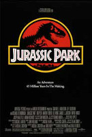

JURASSIC PARK: O PARK DOS DINOSSAUROS
Jurassic Park (no Brasil, Jurassic Park: O Parque dos Dinossauros; em Portugal, Parque Jurássico) é um filme estadunidense de ficção científica e aventura dirigido por Steven Spielberg e baseado no livro homônimo escrito por Michael Crichton.
É estrelado por Sam Neill, Laura Dern, Jeff Goldblum, Richard Attenborough, Ariana Richards, Joseph Mazzello, Samuel L. Jackson e Bob Peck. O filme é centrado na fictícia Isla Nublar, onde um filantropo bilionário e uma pequena equipe de geneticistas criam um parque temático em uma ilha, onde as principais atrações são variadas espécies de dinossauros recriados através da engenharia genética.